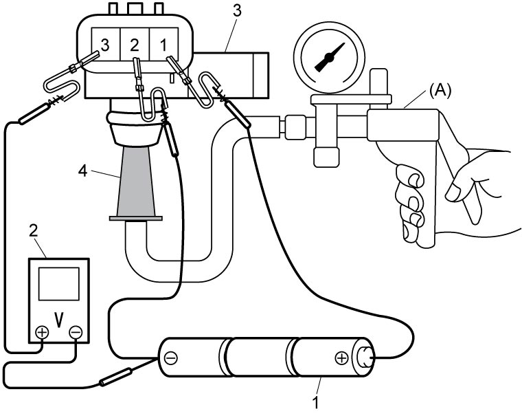

1C
| MAP Sensor Inspection |
NOTICE:
If excessive vacuum is applied, the MAP sensor may be damaged.
Do not exceed a vacuum of –70 kPa (–0.7 kgf/cm2, –10.2 psi, –0.7 bar).
1)Remove MAP sensor. 
2)Check MAP sensor output voltage as follows.
If faulty condition is found, replace MAP sensor.
If faulty condition is found, replace MAP sensor.
a)Arrange 3 new 1.5 V batteries (1) in series, and check that total voltage is 4.5 to 5.0 V.
b)Connect voltmeter (2), special tool and batteries to MAP sensor as shown in figure.


 "Expand image")
| 4. | Adapter included in special tool |
c)Check that voltage varies gradually when vacuum is gradually applied with special tool.
NOTE:
Environmental condition affects output voltage largely.
The sensor voltage below is reference value when measuring under the following conditions.
•Power supply voltage: 5 V
•Ambient temperature: 20 °C (68 °F)
•Atmospheric pressure: 101.3 kPa (1.0 kgf/ cm2, 14.7 psi, 1.01 bar)
•Ambient temperature: 20 °C (68 °F)
•Atmospheric pressure: 101.3 kPa (1.0 kgf/ cm2, 14.7 psi, 1.01 bar)
MAP sensor reference voltage
Atmospheric pressure: Approx. 1.74 V
Vacuum of –30 kPa (–0.3 kgf/cm2, –4.4 psi, –0.3 bar): Approx. 1.30 V
Vacuum of –60 kPa (–0.6 kgf/cm2, –8.7 psi, –0.6 bar): Approx. 0.86 V